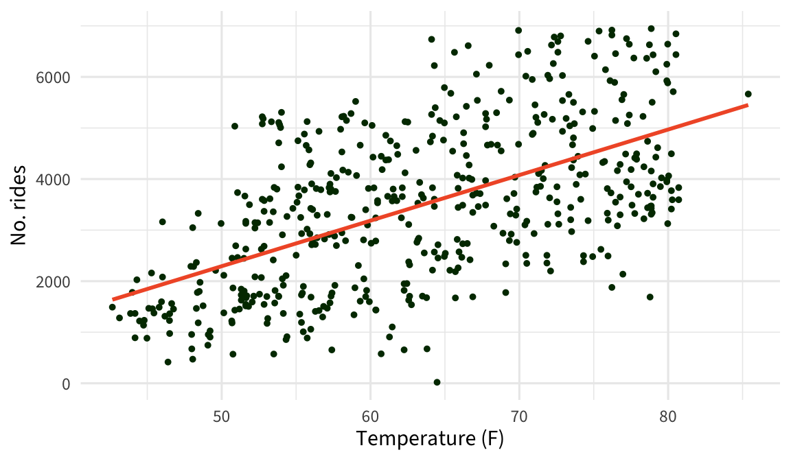
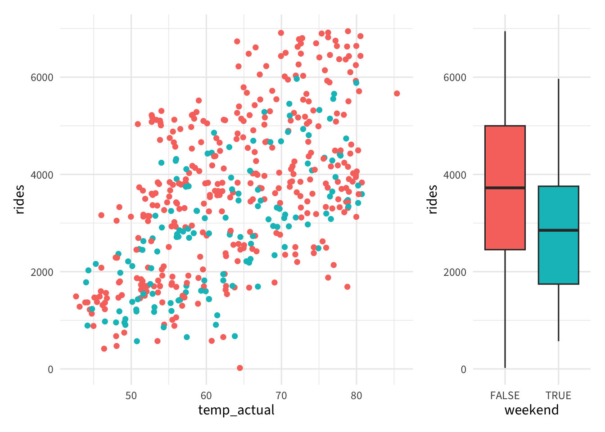
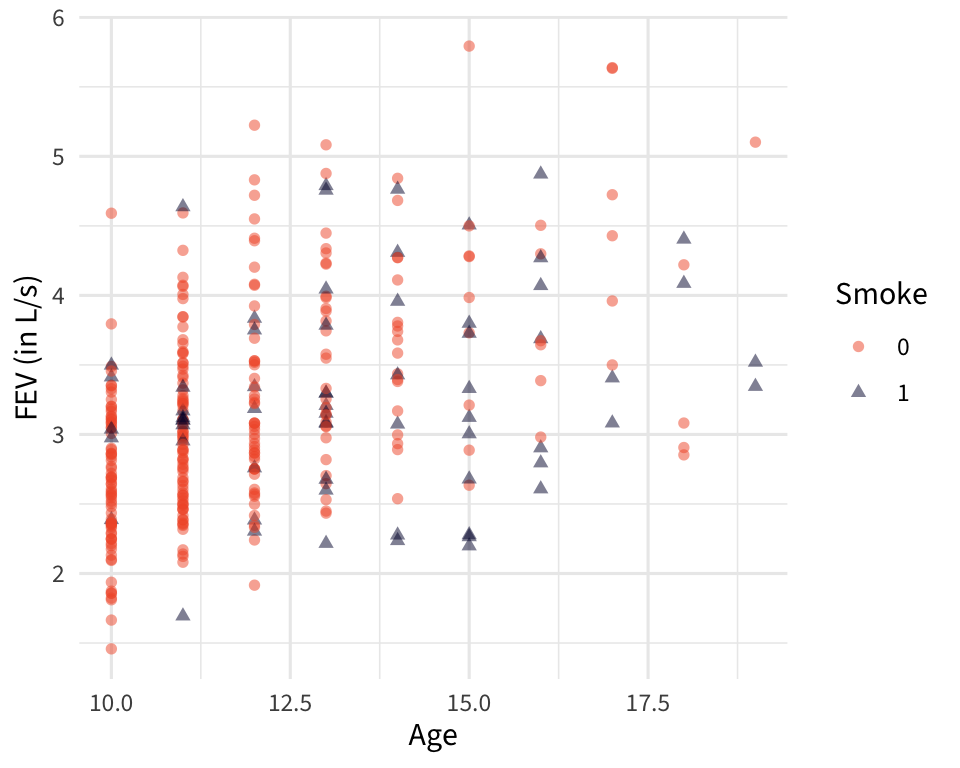
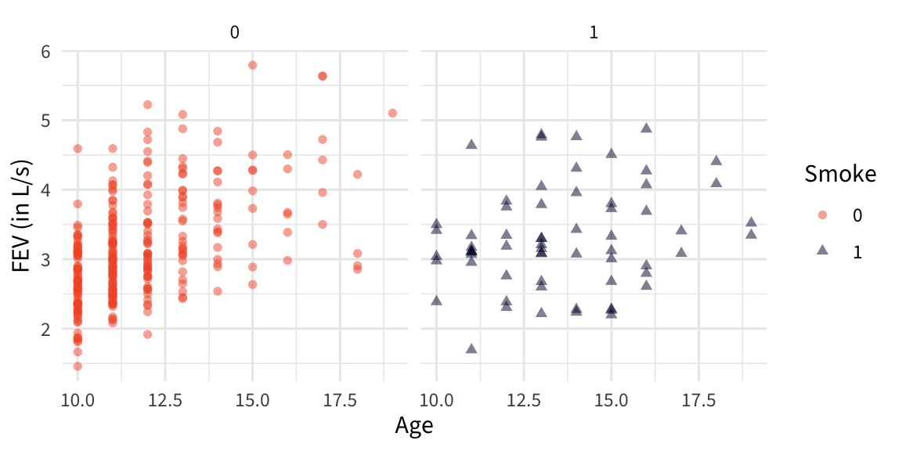
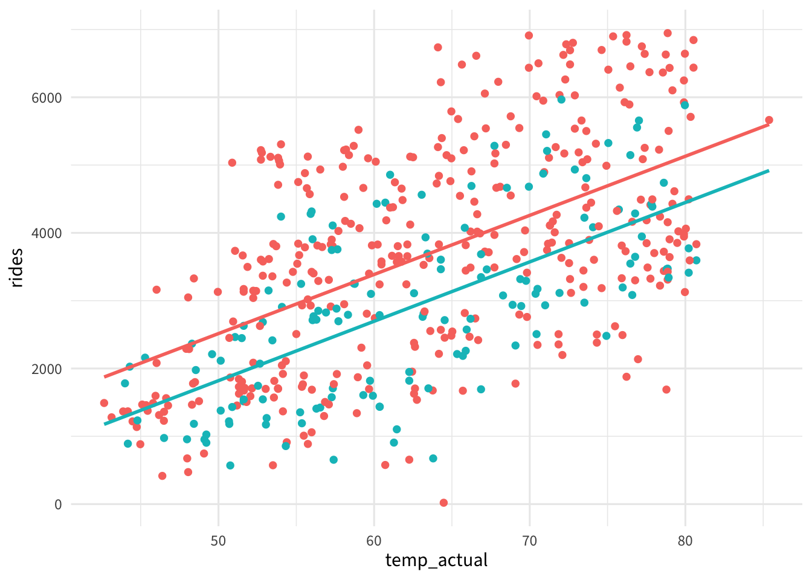
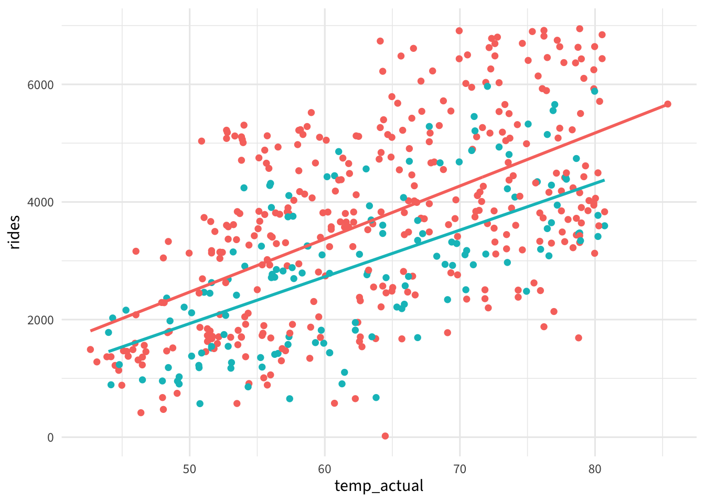

\[ \operatorname{\widehat{rides}} = -1525.54 + 87.02(\operatorname{temp\_actual}) - 38.63(\operatorname{windspeed}) \]
Adding Categorical Predictors
Day 10
Prof Amanda Luby
Carleton College
Stat 230 - Spring 2026
Recap: bikes MLR

\(R^2 =\) 0.35
bikes data
| date | season | year | month | weekend | holiday | temp_actual | temp_feel | humidity | windspeed | rides |
|---|---|---|---|---|---|---|---|---|---|---|
| 2012-02-11 | winter | 2012 | Feb | TRUE | no | 48.54352 | 50.97803 | 73.1250 | 19.416332 | 1977 |
| 2012-04-10 | spring | 2012 | Apr | FALSE | no | 64.96402 | 71.26097 | 43.5000 | 16.708125 | 5099 |
| 2011-02-25 | winter | 2011 | Feb | FALSE | no | 58.88888 | 63.54149 | 71.2174 | 23.218113 | 1341 |
| 2012-01-14 | winter | 2012 | Jan | TRUE | no | 45.28400 | 48.47783 | 45.7500 | 12.541261 | 2160 |
| 2012-06-18 | spring | 2012 | Jun | FALSE | no | 73.94298 | 81.03578 | 77.7917 | 11.707982 | 4446 |
| 2012-05-20 | spring | 2012 | May | TRUE | no | 77.81748 | 84.55703 | 53.0417 | 17.042589 | 4425 |
| 2012-05-03 | spring | 2012 | May | FALSE | no | 73.32800 | 80.35178 | 76.8333 | 8.957632 | 5657 |
| 2011-01-20 | winter | 2011 | Jan | FALSE | no | 51.31102 | 54.95450 | 53.8333 | 13.125568 | 1844 |
| 2011-02-17 | winter | 2011 | Feb | FALSE | no | 64.16448 | 70.57922 | 50.5000 | 15.416968 | 2216 |
| 2011-12-23 | winter | 2011 | Dec | FALSE | no | 59.55198 | 65.97617 | 68.6250 | 18.374482 | 2046 |
Plan for today: remove windspeed but add weekend

New data example
Goal:
investigate the association between smoking and lung capacity using data from 345 adolescents between the ages of 10 and 19
Wrinkle:
Lung function is expected to increase during adolescence, but smoking may slow it’s progression
Data:
| Variable | Description |
|---|---|
FEV |
forced expiratory volume (in liters per second) |
Age |
age in years |
Smoke |
Smoker or Nonsmoker |
Source: Rosner (2006)
EDA

EDA

EDA

Indicator variables
Regression requires a numeric representation of all variables, so we treat TRUE = 1 and FALSE = 0
Create a Smoker indicator variable:
Smoker= 1Nonsmoker= 0
Example 1
For each regression model on the handout, sketch the fitted model on the whiteboard
- Each fitted model will have two lines: one for smokers and one for nonsmokers
- Work with your groups (last day together!)
Model 1
Model 2
Model 3
Parallel lines model
The number of rides increases at the same rate, but always lower on weekends

Different slopes model
The number of rides starts at the same baseline, but the relationship between temperature and rides is different on weekends vs weekdays

Separate lines model
Weekends/weekdays have different baselines and different relationships with the number of rides

Parallel lines model
\[\mu(y|x) = \beta_0 + \beta_1 \texttt{temp} + \beta_2 \texttt{weekend}\]
- \(\beta_0\): intercept for weekdays
- \(\beta_0 + \beta_2\): intercept for weekends
- \(\beta_1\): slope for both groups
Different slopes model
\[\mu(y|x) = \beta_0 + \beta_1 \texttt{temp} + \beta_2 \texttt{temp} \times \texttt{weekend}\]
- \(\beta_0\): intercept for both groups
- \(\beta_1\): slope for weekdays
- \(\beta_1 + \beta_2\): slope for weekends
Separate lines model
\[\mu(y|x) = \beta_0 + \beta_1 \texttt{temp} + \beta_2 \texttt{weekend} + \beta_3 \texttt{temp} \times \texttt{weekend}\]
- \(\beta_0\): intercept for weekdays
- \(\beta_0 + \beta_2\): intercept for weekends
- \(\beta_1\): slope for weekdays
- \(\beta_1 + \beta_3\): slope for weekends
More than 2 categories
What if we want to incorporate season? (fall, spring, summer, winter)
A possibly bad idea
Convert the column to numeric:
- Fall \(\to\) 1
- Winter \(\to\) 2
- Spring \(\to\) 3
- Summer \(\to\) 4
\[\mu(\text{rides} | \text{season}) = \beta_0 + \beta_1 \text{season}\]
A good idea
Create a set of indicator (dummy) variables to represent the four categories
| Original |
|---|
| winter |
| fall |
| spring |
| spring |
| fall |
| summer |
| winter |
|---|
| 1 |
| 0 |
| 0 |
| 0 |
| 0 |
| 0 |
| spring |
|---|
| 0 |
| 0 |
| 1 |
| 1 |
| 0 |
| 0 |
| summer |
|---|
| 0 |
| 0 |
| 0 |
| 0 |
| 0 |
| 1 |
Indicator variables
For a categorical variable with \(k\) levels, create \(k-1\) indicator variables to fully represent the original variable
Example 2
For each sketched regression model, write the mean function for a regression model that matches on the whiteboard
- Note that line type = season
- Work with your groups